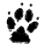

If we're looking for the paw-print of Arthur's dog, and really want to stretch the issue about as far as it can be stretched, we might well ask what kind of dog we are looking for. Although there is no definitive evidence for the type of Arthur's dog, there are some pointers as to the kinds of dogs used for hunting in Iron Age Britain, and by extension, the Dark Ages. We might divide the possible candidates into breeds something like the modern Mastiffs, or somewhere between the modern Irish Wolfhound and Greyhounds.
According to Mastiff fans, they were brought from Britain to Rome and given the name Pugnaces Britanniae*, though the claim that they were also used in Julius Caesar's campaign to Britain* might suggest the name has been misinterpreted (either way, a checkable primary source is currently proving somewhat elusive). The suggestion is that these dogs were developed into the Roman Canis Pugnax* ("Dogs of War", if you like) as possibly featured, for example, on this frieze (and, less likely given the body-form, this 1stC. lamp). Originally these may have derived from the middle-eastern Alaunt (Info) though there is no great evidence for this. If it is true that Britain had a mastiff-type dog, it is possibly these that are the snub-nosed dogs seen mating on the handle of a 2nd C. knife found buried in a dog-graveyard at Silchester*.
On the other hand there is very good evidence for some kind of large Greyhound/Wolfhound being used in Iron Age Britain*. This is not to say that the dog was identical to current breeds. For example, while the Irish Wolfhound is widely regarded by its fans as the epitome of the Celtic hunting dog, there is no great evidence that the Wolfhound breed was as we now see it prior to its rescue from obscurity c.1863 C.E. by George Graham*.
The clearest evidence for British hunting dogs of the Wolfhound/Greyhound-type comes from a miniature (c.365 C.E.*) found at the Romano-British temple to the British god No(/u)do(/e)ns (~Ludd?*) at Lydney Park, Gloucestershire (Info). The temple featured dog statues as well; the dog theme possibly arising because of the association of Nodens and Mars. The miniature (Photo) shows a dog which is clearly somewhere between a Wolfhound and our present Greyhound. The dog is almost certainly of the breed Vertragus (Statue) a Celtic proto-greyhound first noted c.150 C.E. by Arrian (Biography). More information on the breed can be found here and quotes from Arrian here. Dogs of these types certainly occur in the Arthurian literature: indeed, in Culhwch and Olwen, Culhwch sets off to see Arthur with two greyhounds (uilgi cp. modern Welsh milgi "greyhound").
Given this it seems the Romano-Britains broadly had the choice between something like a Greyhound, only larger and making its way towards the Wolfhound, and something like a Mastiff. Strabo's (Biography) Geographika* (7-23 C.E.) confuses the Canis Pugnax issue by noting that the British dogs are well suited to the chase, but that the Celti (Continental Celts / Gauls) use them in war. However The Laws of Howell Dda (See Other Works) make a clear distinction between mil-gi ("swift-hounds") and gel-gi ("great-hounds")*, which may be the distinction between sight-hounds for coursing like the Vertragus and a Mastiff-type dog capable of bringing down larger prey. Certainly Richards* translates these as greyhounds and staghounds respectively. Analysis of dog remains from the Middle to Late Bronze Age at Caldicot suggests there were a range of dog sizes present, but most were large - in some cases larger than wolves. It also suggests the dogs suffered considerable abuse though lived long lives*. The skull of a complete skeleton found at the site is suggestive of the streamlined faced of a modern wolf or greyhound (*Fig.145).
Any mastiff would certainly have been an asset in a boar hunt, as comparison with their relatives the Pit Bulls will prove*. Overall, however, the evidence tends to weigh in for the Greyhound/Wolfhound mix - the evidence for the use of the Vertragus in Iron Age Celtic societies is much more complete. The Wolfhound was, later at least, used for hunting wolves* and would certainly have been up to hunting boar.
Given this, what shape would a paw print be? The paws of most dogs are actually very similar. The foot of the dog (that bit of the paw that usually touches the ground) consists of four clawed toes, each with a pad, and larger metacarpal or metatarsal pad at the rear*. Usually the larger pad is slightly heart shaped, however it can, in print, be more rounded. Irish Wolfhounds have large paws and slightly more rounded feet. That said, dogs in mountainous regions are often bred to be polydactyl*, so we may equally be looking for an animal with five or six claws on the ground.
For interest, here's a typical modern Wolfhound print...
